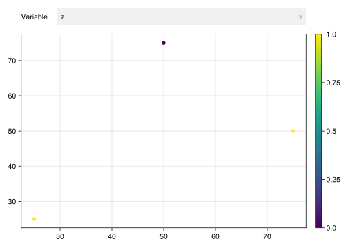
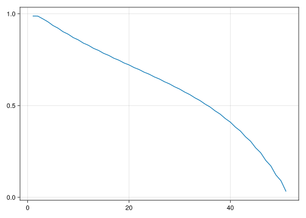
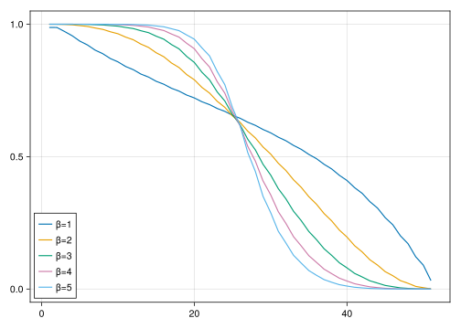
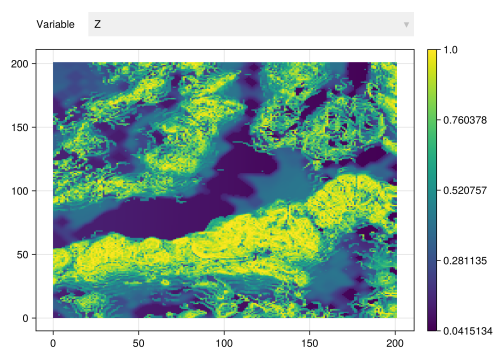
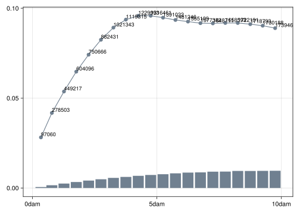
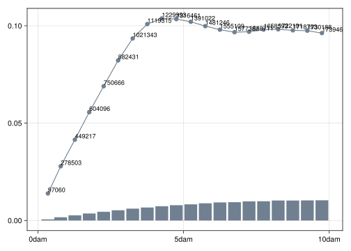
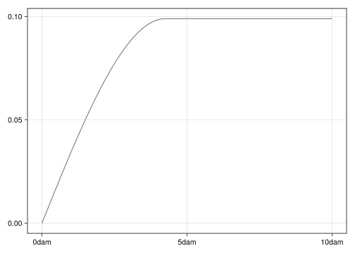
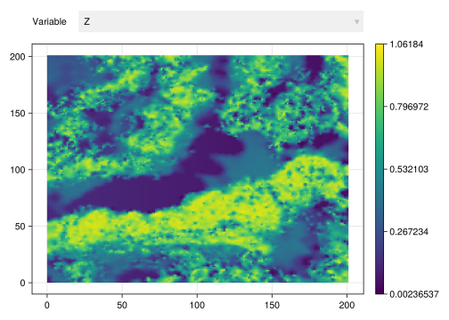

data = georef((z=[1.0, 0.0, 1.0],), [(25, 25), (50, 75), (75, 50)])| z | geometry |
|---|---|
| Continuous | Point |
| [NoUnits] | 🖈 Cartesian{NoDatum} |
| 1.0 | (x: 25.0 m, y: 25.0 m) |
| 0.0 | (x: 50.0 m, y: 75.0 m) |
| 1.0 | (x: 75.0 m, y: 50.0 m) |
A very common task in geospatial data science is geospatial interpolation, i.e., predicting variables on geometries that lie between two or more geometries that have measurements. In this chapter, we will exploit geospatial correlation to make good predictions of continuous variables over an entire domain based on sparse measurements, which are usually stored on a GeometrySet.
The basic idea behind most geostatistical interpolation methods is weighted combination of values from neighboring geometries. Given a geometry \(u\), we want to estimate the value of the variable at this geometry \(z(u)\) using weighted combinations of measurements from neighboring geometries \(u_i,\ i=1,2,\ldots,n\):
\[ z(u) = \lambda_1 z(u_1) + \lambda_2 z(u_2) + \cdots + \lambda_n z(u_n) \]
The methods differ in the way they compute the weights \(\lambda_i,\ i=1,2,\ldots,n\), and we will cover two basic methods from classical literature: IDW and Kriging.
In Inverse Distance Weighting (IDW), the weights are computed in terms of distances \(d(u, u_i)\) to the neighboring geometries:
\[ \lambda_i = \frac{1}{{d(u, u_i)}^\beta} \]
This basic idea was proposed by Shepard (1968), who also studied the effect of the exponent \(\beta\) in the interpolation results. Here, we will visualize the results using synthetic data:
data = georef((z=[1.0, 0.0, 1.0],), [(25, 25), (50, 75), (75, 50)])| z | geometry |
|---|---|
| Continuous | Point |
| [NoUnits] | 🖈 Cartesian{NoDatum} |
| 1.0 | (x: 25.0 m, y: 25.0 m) |
| 0.0 | (x: 50.0 m, y: 75.0 m) |
| 1.0 | (x: 75.0 m, y: 50.0 m) |
viewer(data, pointsize = 10)┌ Warning: Found `resolution` in the theme when creating a `Scene`. The `resolution` keyword for `Scene`s and `Figure`s has been deprecated. Use `Figure(; size = ...` or `Scene(; size = ...)` instead, which better reflects that this is a unitless size and not a pixel resolution. The key could also come from `set_theme!` calls or related theming functions.
└ @ Makie ~/.julia/packages/Makie/We6MY/src/scenes.jl:227
First, we need to the define the domain of interpolation, i.e., the geometries where we want to estimate the variable z. In this case, we will perform interpolation on a 2D CartesianGrid:
grid = CartesianGrid(100, 100)100×100 CartesianGrid
├─ minimum: Point(x: 0.0 m, y: 0.0 m)
├─ maximum: Point(x: 100.0 m, y: 100.0 m)
└─ spacing: (1.0 m, 1.0 m)With the measurements of the variable z in the geotable, and the domain of interpolation, we can use the Interpolate transform with the IDW model:
interp = data |> Interpolate(grid, IDW())| z | geometry |
|---|---|
| Continuous | Quadrangle |
| [NoUnits] | 🖈 Cartesian{NoDatum} |
| 0.781732 | Quadrangle((x: 0.0 m, y: 0.0 m), ..., (x: 0.0 m, y: 1.0 m)) |
| 0.783631 | Quadrangle((x: 1.0 m, y: 0.0 m), ..., (x: 1.0 m, y: 1.0 m)) |
| 0.785528 | Quadrangle((x: 2.0 m, y: 0.0 m), ..., (x: 2.0 m, y: 1.0 m)) |
| 0.787419 | Quadrangle((x: 3.0 m, y: 0.0 m), ..., (x: 3.0 m, y: 1.0 m)) |
| 0.789298 | Quadrangle((x: 4.0 m, y: 0.0 m), ..., (x: 4.0 m, y: 1.0 m)) |
| 0.79116 | Quadrangle((x: 5.0 m, y: 0.0 m), ..., (x: 5.0 m, y: 1.0 m)) |
| 0.792998 | Quadrangle((x: 6.0 m, y: 0.0 m), ..., (x: 6.0 m, y: 1.0 m)) |
| 0.794805 | Quadrangle((x: 7.0 m, y: 0.0 m), ..., (x: 7.0 m, y: 1.0 m)) |
| 0.796573 | Quadrangle((x: 8.0 m, y: 0.0 m), ..., (x: 8.0 m, y: 1.0 m)) |
| 0.798295 | Quadrangle((x: 9.0 m, y: 0.0 m), ..., (x: 9.0 m, y: 1.0 m)) |
| ⋮ | ⋮ |
interp |> viewer┌ Warning: Found `resolution` in the theme when creating a `Scene`. The `resolution` keyword for `Scene`s and `Figure`s has been deprecated. Use `Figure(; size = ...` or `Scene(; size = ...)` instead, which better reflects that this is a unitless size and not a pixel resolution. The key could also come from `set_theme!` calls or related theming functions.
└ @ Makie ~/.julia/packages/Makie/We6MY/src/scenes.jl:227
To visualize the effect of the exponent, let’s extract the interpolation results along the line segment between two of the measurements, and visualize it:
seg = Segment((25, 25), (50, 75))Segment
├─ Point(x: 25.0 m, y: 25.0 m)
└─ Point(x: 50.0 m, y: 75.0 m)z = interp[seg, "z"]51-element Vector{Float64}:
0.9878058074478854
0.9876143292632583
0.972495221818037
0.9564199524248658
0.9361611041027588
0.9216832603980624
0.9021987666253538
0.8888032891965897
0.870354691640647
0.8577880405850806
0.8403212677723804
0.828402085571967
0.8118014293422096
⋮
0.409930020727715
0.3827414007527533
0.3610487511864091
0.32990370885751297
0.3057282754699494
0.26975994006108955
0.24282226179926458
0.20095741787691726
0.17114300512175212
0.1219443018616857
0.09029188985211117
0.03175705173700492Mke.lines(z)┌ Warning: Found `resolution` in the theme when creating a `Scene`. The `resolution` keyword for `Scene`s and `Figure`s has been deprecated. Use `Figure(; size = ...` or `Scene(; size = ...)` instead, which better reflects that this is a unitless size and not a pixel resolution. The key could also come from `set_theme!` calls or related theming functions.
└ @ Makie ~/.julia/packages/Makie/We6MY/src/scenes.jl:227
We observe that the exponent \(\beta=1\) leads to a gradual transition from the value \(z=1\) to the value \(z=0\). Let’s repeat the process with increasing values of the exponent:
fig = Mke.Figure()
Mke.Axis(fig[1,1])
for β in [1,2,3,4,5]
interp = data |> Interpolate(grid, IDW(β))
Mke.lines!(interp[seg, "z"], label = "β=$β")
end
Mke.axislegend(position = :lb)
Mke.current_figure()┌ Warning: Found `resolution` in the theme when creating a `Scene`. The `resolution` keyword for `Scene`s and `Figure`s has been deprecated. Use `Figure(; size = ...` or `Scene(; size = ...)` instead, which better reflects that this is a unitless size and not a pixel resolution. The key could also come from `set_theme!` calls or related theming functions.
└ @ Makie ~/.julia/packages/Makie/We6MY/src/scenes.jl:227
The larger is the exponent, the more abrupt is the transition of values between the two locations. In addition, the IDW solution will converge to the nearest neighbor solution as \(\beta \to \infty\):
data |> Interpolate(grid, IDW(100)) |> viewer┌ Warning: Found `resolution` in the theme when creating a `Scene`. The `resolution` keyword for `Scene`s and `Figure`s has been deprecated. Use `Figure(; size = ...` or `Scene(; size = ...)` instead, which better reflects that this is a unitless size and not a pixel resolution. The key could also come from `set_theme!` calls or related theming functions.
└ @ Makie ~/.julia/packages/Makie/We6MY/src/scenes.jl:227
Custom distances from Distances.jl may be used in place of the Euclidean distance to meet specific application requirements (e.g. Haversine distance on the sphere).
In Kriging (Matheron 1971), the weights are computed using geospatial correlation. More specifically, they are the solution to a linear system of equations produced with a theoretical variogram model \(\gamma\):
\[ \begin{bmatrix} \mathbf{G} & \mathbf{1} \\ \mathbf{1}^\top & 0 \end{bmatrix} \begin{bmatrix} \mathbf{\lambda} \\ \nu \end{bmatrix} = \begin{bmatrix} \mathbf{g} \\ 1 \end{bmatrix} \]
where \(\mathbf{G}_{ij} = \gamma(u_i, u_j)\) and \(\mathbf{g}_i = \gamma(u, u_i)\) and \(\nu\) is the Lagrange multiplier associated with the constraint \(\mathbf{1}^\top \mathbf{\lambda} = 1\). The system of equations above is known as Ordinary Kriging, but many other variants are supported by the framework.
The book by Olea (1999) is a good resource to learn the different systems of of equations associated with Kriging interpolation. Names such as Simple Kriging Ordinary Kriging, Universal Kriging are quite popular.
Unlike IDW, the Kriging solution is a function of pairwise evaluations of distances between geometries with measurements, represented in the matrix \(\mathbf{G}\). The pairwise evaluations account for possible redundancy in the measurements, which leads to improvements in the estimates:
γ = GaussianVariogram(range=30.0)
data |> Interpolate(grid, Kriging(γ)) |> viewer┌ Warning: Found `resolution` in the theme when creating a `Scene`. The `resolution` keyword for `Scene`s and `Figure`s has been deprecated. Use `Figure(; size = ...` or `Scene(; size = ...)` instead, which better reflects that this is a unitless size and not a pixel resolution. The key could also come from `set_theme!` calls or related theming functions.
└ @ Makie ~/.julia/packages/Makie/We6MY/src/scenes.jl:227
In the previous chapter, we learned how the range of the variogram determines the average size of the “blobs” in the image. Let’s illustrate this concept again for increasing values of this parameter:
fig = Mke.Figure()
Mke.Axis(fig[1,1])
for r in [10,20,30,40,50]
γ = GaussianVariogram(range=r)
interp = data |> Interpolate(grid, Kriging(γ))
Mke.lines!(interp[seg, "z"], label = "range=$r")
end
Mke.axislegend(position = :lb)
Mke.current_figure()┌ Warning: Found `resolution` in the theme when creating a `Scene`. The `resolution` keyword for `Scene`s and `Figure`s has been deprecated. Use `Figure(; size = ...` or `Scene(; size = ...)` instead, which better reflects that this is a unitless size and not a pixel resolution. The key could also come from `set_theme!` calls or related theming functions.
└ @ Makie ~/.julia/packages/Makie/We6MY/src/scenes.jl:227
The larger is the range, the less abrupt is the transition of values between the two locations. Similar visualizations can be produced by varying the sill, the nugget and the model of the variogram.
In order to solidify the concepts learned so far, let’s look into an example. We will cover all the steps that a geospatial data scientist has to perform to extract geospatial correlation from samples and to use this information in geospatial interpolation.
Let’s consider an image of the Walker Lake by Mariethoz and Caers (2014) as groundtruth. To avoid visualization of large images with CairoMakie.jl, we will consider a subdomain within a Box:
using GeoIO
img = GeoIO.load("data/walkerlake.gslib")
img = img[Box((0, 0), (200, 200)), :]| Z | geometry |
|---|---|
| Continuous | Quadrangle |
| [NoUnits] | 🖈 Cartesian{NoDatum} |
| 0.127143 | Quadrangle((x: 0.0 m, y: 0.0 m), ..., (x: 0.0 m, y: 1.0 m)) |
| 0.126681 | Quadrangle((x: 1.0 m, y: 0.0 m), ..., (x: 1.0 m, y: 1.0 m)) |
| 0.126143 | Quadrangle((x: 2.0 m, y: 0.0 m), ..., (x: 2.0 m, y: 1.0 m)) |
| 0.125604 | Quadrangle((x: 3.0 m, y: 0.0 m), ..., (x: 3.0 m, y: 1.0 m)) |
| 0.144938 | Quadrangle((x: 4.0 m, y: 0.0 m), ..., (x: 4.0 m, y: 1.0 m)) |
| 0.169887 | Quadrangle((x: 5.0 m, y: 0.0 m), ..., (x: 5.0 m, y: 1.0 m)) |
| 0.219131 | Quadrangle((x: 6.0 m, y: 0.0 m), ..., (x: 6.0 m, y: 1.0 m)) |
| 0.302491 | Quadrangle((x: 7.0 m, y: 0.0 m), ..., (x: 7.0 m, y: 1.0 m)) |
| 0.351556 | Quadrangle((x: 8.0 m, y: 0.0 m), ..., (x: 8.0 m, y: 1.0 m)) |
| 0.365325 | Quadrangle((x: 9.0 m, y: 0.0 m), ..., (x: 9.0 m, y: 1.0 m)) |
| ⋮ | ⋮ |
img |> viewer┌ Warning: Found `resolution` in the theme when creating a `Scene`. The `resolution` keyword for `Scene`s and `Figure`s has been deprecated. Use `Figure(; size = ...` or `Scene(; size = ...)` instead, which better reflects that this is a unitless size and not a pixel resolution. The key could also come from `set_theme!` calls or related theming functions.
└ @ Makie ~/.julia/packages/Makie/We6MY/src/scenes.jl:227
Let’s assume that we only have access to 10000 samples from the image:
using Random
samples = img |> Sample(10000, replace=false, rng=MersenneTwister(123))
samples |> viewer┌ Warning: Found `resolution` in the theme when creating a `Scene`. The `resolution` keyword for `Scene`s and `Figure`s has been deprecated. Use `Figure(; size = ...` or `Scene(; size = ...)` instead, which better reflects that this is a unitless size and not a pixel resolution. The key could also come from `set_theme!` calls or related theming functions.
└ @ Makie ~/.julia/packages/Makie/We6MY/src/scenes.jl:227Our goal is to interpolate the variable Z over the original domain. Let’s start by estimating the EmpiricalVariogram from the samples. Because the distribution of values in the Walker Lake is skewed, the default :matheron estimator of the variogram shows a high nugget effect:
g = EmpiricalVariogram(samples, "Z", maxlag = 100.0)EmpiricalVariogram
├─ abscissas: [3.42807 m, 7.81911 m, 12.6844 m, ..., 87.5004 m, 92.4891 m, 97.4885 m]
├─ ordinates: [0.0281692, 0.0417714, 0.053692, ..., 0.0911535, 0.0903101, 0.08894]
├─ distance: Euclidean(0.0)
├─ estimator: MatheronEstimator()
└─ npairs: 23971781varioplot(g)┌ Warning: Found `resolution` in the theme when creating a `Scene`. The `resolution` keyword for `Scene`s and `Figure`s has been deprecated. Use `Figure(; size = ...` or `Scene(; size = ...)` instead, which better reflects that this is a unitless size and not a pixel resolution. The key could also come from `set_theme!` calls or related theming functions.
└ @ Makie ~/.julia/packages/Makie/We6MY/src/scenes.jl:227
A better alternative in this case is to use the robust :cressie estimator:
g = EmpiricalVariogram(samples, "Z", maxlag = 100.0, estimator = :cressie)EmpiricalVariogram
├─ abscissas: [3.42807 m, 7.81911 m, 12.6844 m, ..., 87.5004 m, 92.4891 m, 97.4885 m]
├─ ordinates: [0.013891, 0.0278463, 0.041494, ..., 0.0976509, 0.0974642, 0.0962541]
├─ distance: Euclidean(0.0)
├─ estimator: CressieEstimator()
└─ npairs: 23971781varioplot(g)┌ Warning: Found `resolution` in the theme when creating a `Scene`. The `resolution` keyword for `Scene`s and `Figure`s has been deprecated. Use `Figure(; size = ...` or `Scene(; size = ...)` instead, which better reflects that this is a unitless size and not a pixel resolution. The key could also come from `set_theme!` calls or related theming functions.
└ @ Makie ~/.julia/packages/Makie/We6MY/src/scenes.jl:227
After estimating the empirical variogram, the next step consists of fitting a theoretical model. The behavior near the origin resembles a SphericalVariogram:
γ = GeoStatsFunctions.fit(SphericalVariogram, g)SphericalVariogram
├─ sill: 0.0989522
├─ nugget: 3.6195e-11
├─ range: 42.4939 m
└─ distance: Euclideanvarioplot(γ, maxlag = 100.0)┌ Warning: Found `resolution` in the theme when creating a `Scene`. The `resolution` keyword for `Scene`s and `Figure`s has been deprecated. Use `Figure(; size = ...` or `Scene(; size = ...)` instead, which better reflects that this is a unitless size and not a pixel resolution. The key could also come from `set_theme!` calls or related theming functions.
└ @ Makie ~/.julia/packages/Makie/We6MY/src/scenes.jl:227
Now that we extracted the geospatial correlation from the samples, we can use this information in Kriging interpolation. Instead of fitting all the samples at once like it is done in the Interpolate transform, we will fit the Kriging model with a maximum number of neighbors with the InterpolateNeighbors transform:
interp = samples |> InterpolateNeighbors(img.geometry, Kriging(γ))| Z | geometry |
|---|---|
| Continuous | Quadrangle |
| [NoUnits] | 🖈 Cartesian{NoDatum} |
| 0.0973527 | Quadrangle((x: 0.0 m, y: 0.0 m), ..., (x: 0.0 m, y: 1.0 m)) |
| 0.107266 | Quadrangle((x: 1.0 m, y: 0.0 m), ..., (x: 1.0 m, y: 1.0 m)) |
| 0.120707 | Quadrangle((x: 2.0 m, y: 0.0 m), ..., (x: 2.0 m, y: 1.0 m)) |
| 0.125604 | Quadrangle((x: 3.0 m, y: 0.0 m), ..., (x: 3.0 m, y: 1.0 m)) |
| 0.218407 | Quadrangle((x: 4.0 m, y: 0.0 m), ..., (x: 4.0 m, y: 1.0 m)) |
| 0.272989 | Quadrangle((x: 5.0 m, y: 0.0 m), ..., (x: 5.0 m, y: 1.0 m)) |
| 0.306824 | Quadrangle((x: 6.0 m, y: 0.0 m), ..., (x: 6.0 m, y: 1.0 m)) |
| 0.33139 | Quadrangle((x: 7.0 m, y: 0.0 m), ..., (x: 7.0 m, y: 1.0 m)) |
| 0.351556 | Quadrangle((x: 8.0 m, y: 0.0 m), ..., (x: 8.0 m, y: 1.0 m)) |
| 0.365325 | Quadrangle((x: 9.0 m, y: 0.0 m), ..., (x: 9.0 m, y: 1.0 m)) |
| ⋮ | ⋮ |
interp |> viewer┌ Warning: Found `resolution` in the theme when creating a `Scene`. The `resolution` keyword for `Scene`s and `Figure`s has been deprecated. Use `Figure(; size = ...` or `Scene(; size = ...)` instead, which better reflects that this is a unitless size and not a pixel resolution. The key could also come from `set_theme!` calls or related theming functions.
└ @ Makie ~/.julia/packages/Makie/We6MY/src/scenes.jl:227
The InterpolateNeighbors is recommended in 3D applications with hundreds of thousands of measurements and very large grids.
The InterpolateMissing transform can be used to interpolate missing values in a geotable using the same algorithm of InterpolateNeighbors. Likewise, the InterpolateNaN can be used to interpolate NaN values.
Congratulations on finishing Part IV of the book. The interpolation models introduced here are simple, yet very useful. Before we start our journey with real-world applications of the framework, let’s review what we learned:
Interpolate and InterpolateNeighbors transforms, and geostatistical models such as IDW and Kriging.Kriging exploit geospatial correlation to improve interpolation results. We can extract this information from samples using a two-step procedure:
EmpiricalVariogram from the available samplesfit of theoretical model with result from previous stepInterpolate and InterpolateNeighbors are examples of geostatistical transforms. They can be easily inserted in more advanced pipelines as discussed in Part II.In the next chapters, we will use the framework that we learned with real data to illustrate how advanced geospatial data science can be done with just a few lines of code. Once a solution is written in terms of the high-level tools covered in previous chapters, it is trivial to improve computational performance in pure Julia.
Feature and performance requests are very welcome. We invite all users of the framework to submit issues and contribute with our open source software stack.